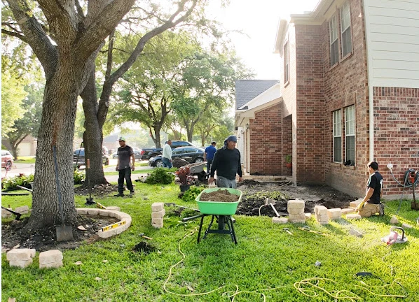
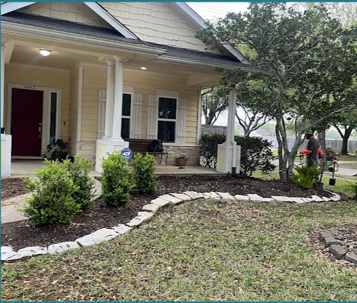
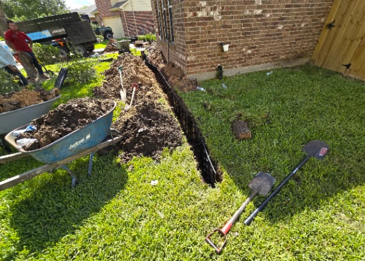
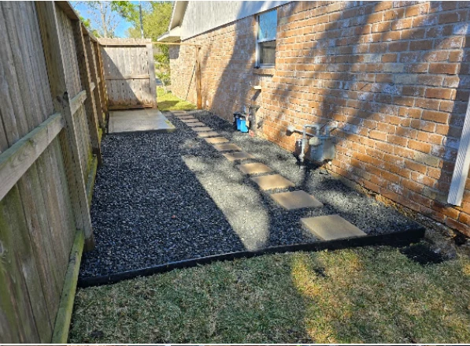

Cervantes Landscaping Services designs and builds clean beds, stone edging, drainage and walkways, and keeps your lawn looking sharp.
Get a Free Estimate Our ServicesFresh mulch, shrubs and clean planting beds that boost curb appeal for Stafford and Houston-area homes.
Natural stone borders and paver work that keep beds crisp and defined.
Trenching and drain installation to move water away from your foundation after Texas downpours.
Low-maintenance gravel side yards with stepping stones and edging.
Mowing, trimming and cleanup to keep your yard healthy year-round.
We are a local Stafford landscaping crew that takes pride in careful, hands-on work. From a simple bed refresh to a full yard transformation, we show up, do the job right and leave your property cleaner than we found it.
Whether you need landscaping in Stafford or Houston for a new home or a long-overdue yard upgrade, we'll walk the property with you and give an honest estimate.
Talk to Us



"Review text goes here."
"Review text goes here."
"Review text goes here."
Cervantes Landscaping Services
11531 Mulholland Dr
Stafford, TX 77477
Phone: (832) 297-8420
Mon–Fri: 7 AM–6 PM
Saturday: 7 AM–3 PM
Sunday: Closed